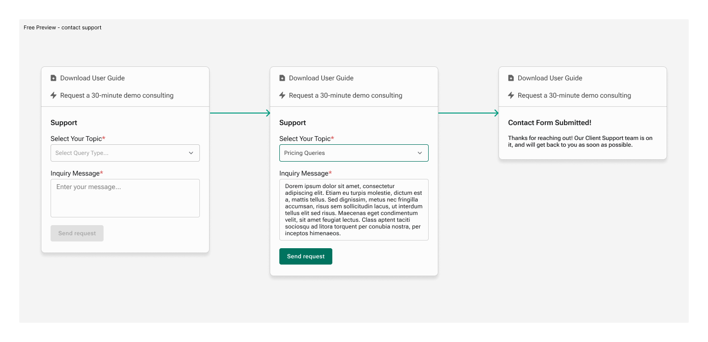

AsiaVerify streamlines business verification across Asia, providing instant, reliable, and fully translated compliance data from official government sources. With AI-powered automation, AsiaVerify eliminates the complexities of regulatory checks—helping businesses make confident, informed decisions with ease.
AsiaVerify
Team: AsiaVerify Product Delivery Team
Tools: Figma, Figjam, Miro
Duration: 4 months
As Lead Product Designer at AsiaVerify, I worked alongside Celine
Ong as co-lead designers, together owning the product end-to-end—
research, wireframes, final UI, prototyping, design system, and
final Figma deliverables. We built AsiaVerify's original design
system together, keeping the product consistent and scalable as new
features shipped.
Working closely with engineers, we turned dense compliance
information into interfaces that are simple to use and easy to
trust. Project Manager Joanne Ng reviewed our designs and kept them
aligned with the product roadmap, helping the team move fast
without losing sight of business goals.


Background
Upleveling AsiaVerify’s onboarding process
AsiaVerify's onboarding page was generic and unclear. Businesses struggled to figure out which verification package they needed, and many gave up before even trying the service. We set out to change that, turning onboarding into a simple place to learn about AsiaVerify and see its value before committing.
UX Research
AsiaVerify users want to evaluate and start using verification services without confusion
Our research showed that new users often felt lost. They wanted to understand what AsiaVerify’s services included but were overwhelmed by technical terms and a lack of clarity. Without trial reports or previews, it was hard for them to decide if the platform met their needs. Many users gave up before fully exploring the platform.
Create an account quickly and easily
Explore platform features and tools
Verify data relevance for specific needs
Access support for onboarding assistance
Compare subscription plans and benefits
Preview a trial report to evaluate platform's value
Approach
Rapid Iteration Through User-Centered Design
We started by analyzing user friction points in the existing portal. Through quick design experiments, we transformed the complex onboarding into a guided experience that introduces a clear video tour, simplified report descriptions, and visual examples that help users understand exactly what they're getting. We continuously gathered feedback on the new onboarding flow and iterated on the pricing presentation to ensure users could confidently choose the right plan for their needs.
Final Deliverables
Increased User Sign-Up Rate
A simplified onboarding process reduced friction for users during sign-up by removing unnecessary steps and providing clear instructions. The design ensured that users could navigate the process with ease.
+25% increase in sign-up
completions
-15% reduction in time spent
on onboarding
This flow is still the one AsiaVerify uses today. The team is now introducing design tokens to make it properly responsive — a genuinely new workflow for our outsourced development partners in Malaysia and China, who hadn't worked with tokens before. It's been a slower rollout than we expected, mostly around getting the documentation and handoff right for a team encountering the concept for the first time.
Boosted Trial-to-Paid Conversions
The trial report preview was redesigned to showcase interactive, categorized data in KYB, KYC, and UBO reports. A guided walkthrough explained the features and benefits, helping users understand the platform’s value.
+20% improvement in
trial-to-paid conversions
Higher engagement with trial features

Enhanced Pricing Transparency
A redesigned pricing page provided a side-by-side comparison of plans with detailed feature breakdowns. Clear "Best Value" tags guided users toward the most suitable plans for their needs, by using AI to analyze user’s profile.
+18% increase in correct plan
selection
-12% decrease in drop-offs on
the pricing page

Improved User Support Accessibility
When users first explore verification services, their key uncertainty is "Am I doing this right?". When users need assistance during their initial platform exploration, the redesigned support form provides clear topic selection and instant access to demo consultation.
+35% increase in support
engagement
Faster resolution of user inquiries, reducing churn and
frustration


Reflection
What shipped, and what changed since
The homepage shown above is the version we tested and shipped, and the sign-up and trial-to-paid metrics above are real results from that version. But shipping isn't the finish line — a few UX gaps only became clear once real usage built up, and the current live homepage has moved past what's pictured here in several ways:
- Sample reports readability at scale: The version here lists sample reports by name and "Jurisdiction – Company name." That worked fine early on, but as the list of sample reports grew, it got harder to scan and absorb. We've since replaced it with three tabs that group our 14 supported jurisdictions into three tiers — clicking a tab surfaces the sample reports for that tier's countries.
- Report type comparison: The layout shown here doesn't surface enough of each report type's features, and users kept struggling to tell report types apart — visible in a rising number of related customer support tickets. We rebuilt it as an accordion that lists features side by side, so users can compare report types directly instead of guessing.
- Pricing placement and pricing: Pricing now sits directly under the sample reports, closer to where users are already evaluating what they're getting. The prices themselves have also changed since this design shipped, following updated business requirements — each plan now sits at a different price point than what's shown here.
- A Q&A section, added afterward: We added a Q&A section for new users, built directly from customer support tickets — questions that kept coming up repeatedly became Q&A entries. It wasn't part of the original design; it came out of watching where users actually got stuck after launch.
The support experience above, on the other hand, has held up — it's still the version live today.